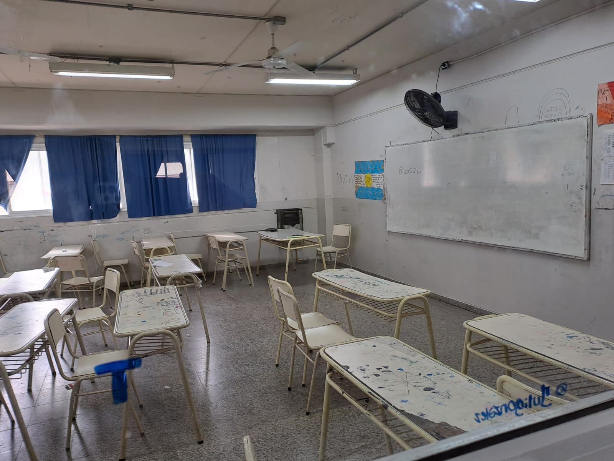
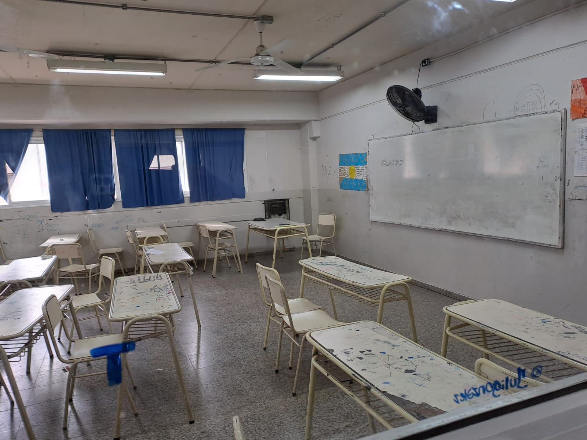
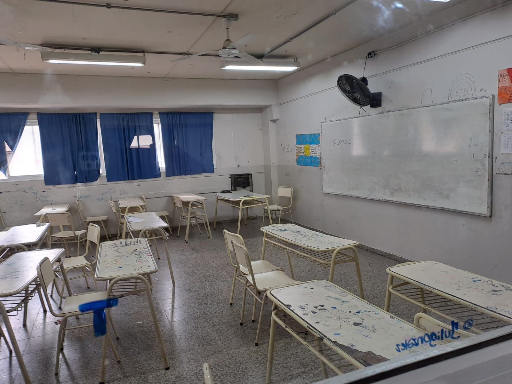

La historia del IPET N°357 José Campellone se caracteriza por su estrecho vínculo con la comunidad y su compromiso con la innovación educativa. Desde su fundación en 2014, la escuela ha estado comprometida con la formación integral de sus estudiantes, ofreciendo una amplia gama de orientaciones y programas para satisfacer las diversas necesidades educativas. Con una matrícula estudiantil de 583 estudiantes y un plantel docente de 110 profesores, la institución ha logrado establecer relaciones sólidas con instituciones locales como SMATA, Volkswagen y el Hospital Príncipe de Asturias, enriqueciendo así la experiencia educativa de sus alumnos..
El vínculo entre la escuela IPET N°357 José Campellone y la comunidad es destacado por su apertura hacia instituciones locales como SMATA, Volkswagen y el Hospital Príncipe de Asturias, rompiendo con la tradicional separación entre la escuela y el entorno. Este enfoque fortalece la interacción entre la institución educativa y su comunidad, influenciando positivamente la dinámica del aula y el proceso de aprendizaje. Además, se resalta la adaptación durante la pandemia mediante la implementación de herramientas tecnológicas como Grupos de WhatsApp, Classroom y Meet, que permitieron mantener la continuidad educativa y evitar la deserción escolar.
Durante la pandemia, el IPET N°357 José Campellone implementó herramientas tecnológicas como Grupos de WhatsApp, Classroom, Forms y Meet. Estas herramientas permitieron mantener la continuidad educativa y evitar la deserción escolar al facilitar la comunicación y el intercambio de información entre docentes y alumnos, así como la entrega y recepción de tareas y el desarrollo de clases virtuales.
La metáfora elegida para representar el establecimiento es la de una balanza inclinada hacia lo técnico en detrimento de ciencias naturales y artes, reflejando una priorización de esta orientación en aspectos como la asignación de recursos y el tiempo dedicado por la dirección del colegio. A pesar de algunos problemas edilicios, el IPET N°357 se percibe como un colegio ordenado y eficiente, con una organización que facilita su funcionamiento en la comunidad.
